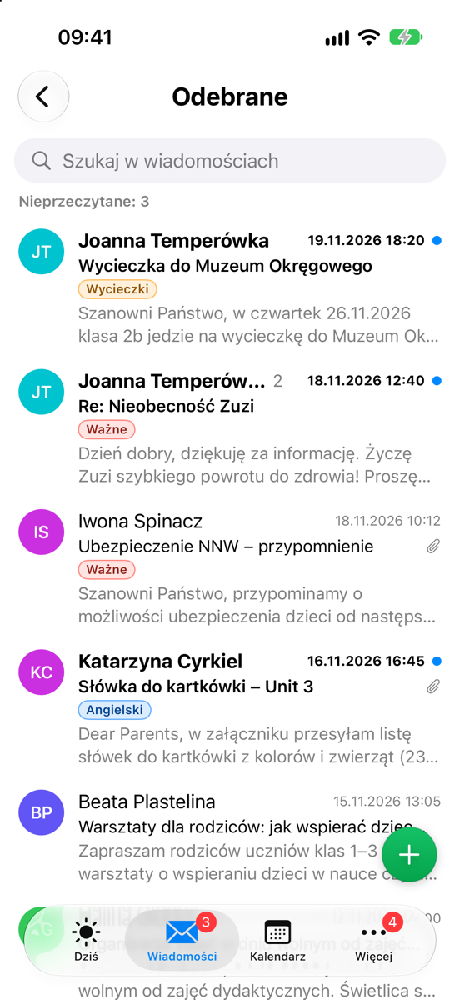
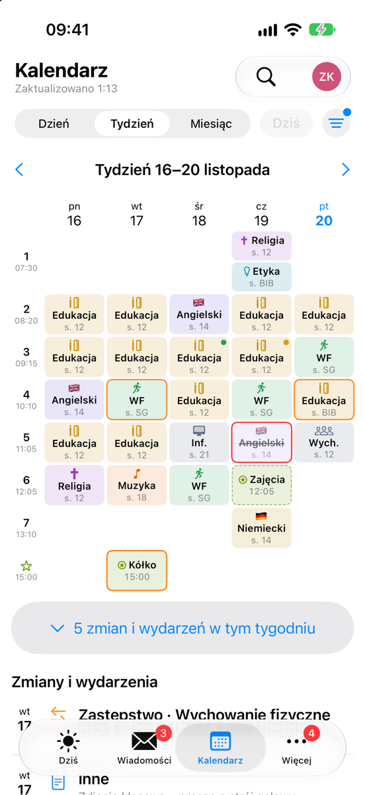
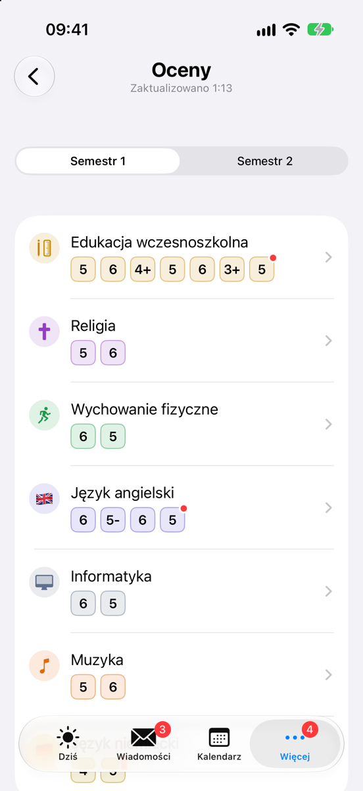
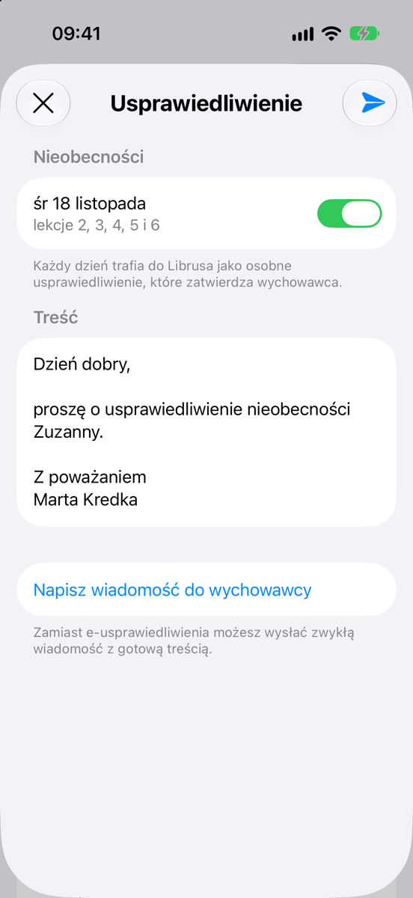
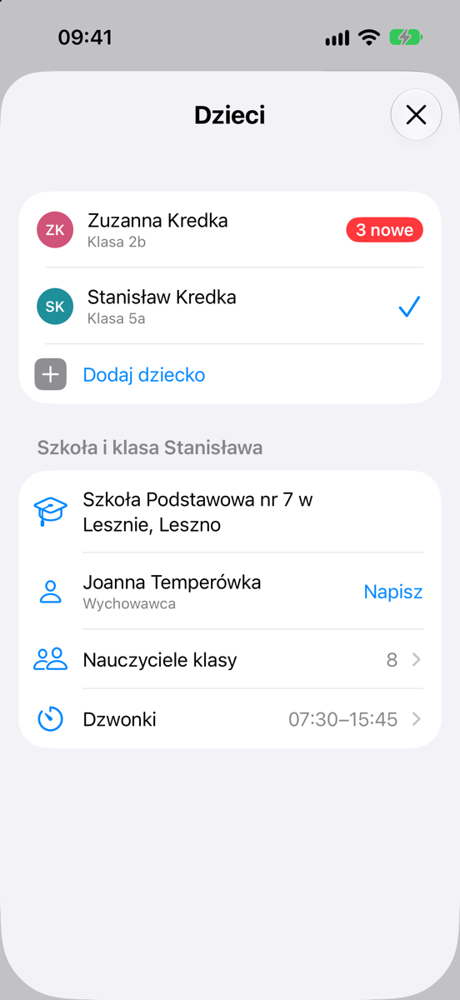

Piórnik obok Librusa.
Na co dzień szybki podgląd w Piórniku, a do pozostałych spraw aplikacja Librus i Synergia.
Piórnik to aplikacja na iPhone’a do codziennego sprawdzania dziennika: wiadomości od nauczycieli, plan lekcji z zastępstwami, sprawdziany, zadania domowe, oceny i nieobecności do usprawiedliwienia. Logujesz się tymi samymi danymi do Synergii, które dała Ci szkoła.
Nowości od wczoraj, sprawy do załatwienia i plan dnia z zastępstwami.

Wątki, odpowiedzi, szkice, etykiety, kosz i załączniki.

Lekcje, sprawdziany i zadania domowe w widoku dnia, tygodnia lub miesiąca.

Oceny z każdego przedmiotu, nowe oznaczone kropką.

Zaznaczasz dni, wpisujesz treść i wysyłasz.

Każde dziecko ze swoim loginem, przełączane jednym dotknięciem.
Piórnik skupia się na tym, co rodzic sprawdza codziennie. Aplikacja Librus i serwis Synergia oferują znacznie więcej i pozostają podstawowym narzędziem szkoły. Obie aplikacje mogą działać obok siebie na tych samych kontach.
Piórnik nie ma własnego serwera. Autor aplikacji nie zbiera, nie przechowuje i nie widzi Twoich danych, haseł ani wiadomości.
Piórnik widzi dokładnie to, co widzisz po zalogowaniu do Synergii w przeglądarce, i nic ponad to.
Nie. Piórnik to niezależny projekt, niepowiązany z Librus Sp. z o.o. Logujesz się w nim danymi do Synergii, które dostałeś ze szkoły.
Nic. Piórnik jest bezpłatny, nie ma reklam ani płatności w aplikacji. Nie ma też własnego serwera, więc nie generuje kosztów, które trzeba by komuś przerzucić.
Hasło trafia tylko do pęku kluczy iOS na Twoim telefonie i jest wysyłane wyłącznie do Librusa podczas logowania. Autor aplikacji nie ma do niego dostępu.
Nie. Obie aplikacje mogą działać obok siebie. Część funkcji, np. własne wydarzenia w kalendarzu czy natychmiastowe powiadomienia, znajdziesz tylko w aplikacji Librus.
Tak. Dodajesz każde dziecko jego loginem do Synergii i przełączasz się między nimi jednym dotknięciem.
Jest w planach. Najpierw pojawi się wersja na iPhone’a.
Na co dzień szybki podgląd w Piórniku, a do pozostałych spraw aplikacja Librus i Synergia.